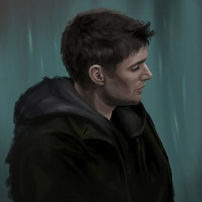

Основная информация
Дункан (lord.reviun) - бывший и первый администратор дискорд-сервера Вишневые Аллеи, зашел на сервер 24 июля 2022 года, наткнувшись на работы Черр и предложив помочь с сервером.
Проживает в городе Воронеж, учится на юриста с 2023 года. Имеет опыт в работе с ботами-дискорд, организации РП-проектов как на ВА так и на других серверах. Является одним из основателей майнкрафт-сервера "Вишнёвые Выживания".
Чем занимается сегодня
Временами проявляет активность на Вишнёвых Аллеях как модератор, но всё же углубляется в учёбу и проводит меньше времени в социальных сетях. В перерывах между учёбой, увлекается сочинением стихотворений.
Интересные факты
- Он создал Вишневое Выживание и сам сервер.
- До знакомства с Черр был администратором нескольких полит-рп серверов и дискорд-сервера ютубера по Hearts of Iron 4.
- В определенный период, он добровольно ушел с поста администратора и временно был модератором.
- Стал снова модератором дискорд-сервера Вишневых Аллей.
- Были временные проблемы с алкоголем и табакокурением, на данный момент контролирует себя.
- Из любых исполнителей: The Hatters, Skillet, Brutto.
- Часто менял образ персонажа и заказывал множество артов для своей новеллы, которую так и не реализовал.
- Псевдоним выбрал благодаря игре "Герои Меча и Магии 5", взяв имя одного из второстепенных героев. Фамилия "Ворон" была основа из-за увлечения, интереса к одноимённой птице.
- Увлекается такими играми как Crusader Kings III, Honkai Star Rail, Stalker, Герои Меча и Магии, Minecraft.
Дункан
| Имя | Вадим Александрович |
| Должность | Основатель, Модератор |
| Возраст | 19 лет |
| Дата рождения | 14.01.2005 |
| Дата захода на сервер | 24.07.2022 |
| Место рождения | Украина |